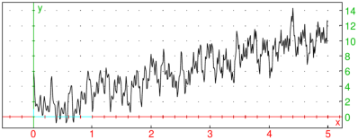
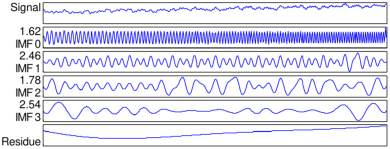
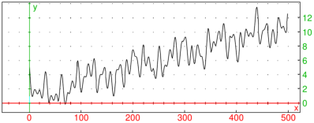

21.4.8 Empirical mode decomposition
Empirical mode decomposition (EMD) is an adaptive method for
decomposing a nonstationary real signal into a sequence of
intrinsic mode functions (IMFs). Each IMF will represent an
intrinsic oscillation of the input signal and satisfies the following
two conditions:
-
The number of local extrema must be equal to the number of
zero crossings or differ from it by at most one.
- The mean value of two envelopes interpolating local minima and
local maxima, respectively, must be zero at any time.
The sequence of IMFs represents a nearly orthogonal basis for the input signal.
An IMF is extracted from the input signal by a technique referred to as
sifting. In each iteration, the mean of the upper and lower envelope
is subtracted from the input signal. The process ends when the variance
of the mean vector is below a predefined threshold v0. Then
the obtained IMF is subtracted from the original signal and the procedure
is iteratively repeated until the number of local extrema goes below
a predefined threshold (usually 2); the rest of the signal is
called the residue or trend (it is not an IMF).
The emd command computes empirical mode
decomposition (GSL is required for cubic spline interpolation).
-
emd takes one mandatory argument and a sequence of
optional arguments:
-
x, a vector of real numbers representing the input signal.
- Optionally, opts, a sequence of options each of
which is one of:
-
threshold=t, where t is a positive
real number specifying the variance threshold v0
(by default, th=0.1).
- limit=n, where n is a positive integer
specifying the maximum number of IMFs to be extracted
(by default, n is unset, meaning that all IMFs are extracted).
- extrema=m, where m is a positive integer
specifying the minimal number of local extrema that an IMF must
contain (by default, m=2).
- residue=bool, where bool is a boolean
value which specifies whether to return the residue
(bool=true, the default) or not
(bool=false).
- If residue=true, then
emd(x ⟨,opts ⟩) returns a sequence
of two objects: the list of IMFs and the residue, respectively. If limit
option is set, then the second element of the returned sequence is the
unprocessed part of the input signal x. The returned IMFs and the residue
always sum up to x.
- If residue=false, then
emd(x ⟨,opts ⟩) returns
only the list of computed IMFs.
A convenient way to visualize intrinsic mode functions is
to use the plotimf
command, which plots (a selection of) IMFs in a stacked layout,
optionally including the input signal and/or the residue.
imfplot is a synonym
for plotimf.
-
plotimf takes one mandatory argument and a sequence of
optional arguments:
-
imfs, a list of intrinsic mode functions obtained by
the emd command.
- Optionally, either n, a positive integer specifying that only the first
n IMFs should be displayed, or opts, a sequence of options
each of which is one of the following:
-
count=n, an alternative way to specify the parameter n (see above).
- index=ind, where ind is an integer k,
a range k1..k2 where k1 and k2 are integers, or a list
of integers and/or ranges, specifying the indices determining a selection of
IMFs. If this option is set, only IMFs with specified indices are shown.
- max=bool, where bool is a boolean value
specifying whether to display the upper y-bound for each IMF plot
(bool=true, the default) or not (bool=false).
- residue=res, where res is the residual signal.
If this option is set, then res is plotted below the IMFs.
- input=orig, where orig is the original signal.
If this option is set, then orig is plotted above the IMFs.
- display=disp or color=disp, where
disp specifies individual graphic attributes which are to be used in
each plot (such as the color, line style, and the like, see Section 19.1.2).
By default, plots are drawn in blue.
- plotimf(imfs ⟨,n ⟩) and
plotimf(imfs,opts)
return a graphical object containing plots of the selected EMD components.
Example
To define a synthetic non-stationary signal, enter:
| f(t):=2t+cos(10t^2+100t)+cos(60t)+cos(40t)+cos(t^2+20t)+cos(t^2/2+5t)+1:;
plot(f(t),t=0..5) |

To discretize the signal, enter:
| synth:=apply(f,linspace(0,5,500)):; |
Now compute EMD and output the total number of intrinsic mode functions:
| imf,res:=emd(synth):; size(imf) |
To show the first four IMFs together with the residue and the
original signal, enter:
| imfplot(imf,residue=res,input=synth,count=4) |

The first IMF captures the high-frequency oscillations
which can be filtered by removing that component.
Effectively, you sum all but the first IMF and
also add the residue to obtain the filtered signal.
The first IMF can be discarded by using the tail command.
| listplot(res+sum(tail(imf))) |
